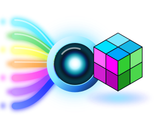

The Workflow Platform for Modern 3D Printing.
The Operating System for Multi-Material 3D Printing
No account, no cloud, no upload. Your files stay on your machine.
Bambu, OrcaSlicer, PrusaSlicer, STL — converted to a clean Snapmaker U1 project.
Built for color. Filament identity, purge, and arrays handled correctly.
Transparent, inspectable, extensible. MIT licensed.
112 real-world files · 100% Doctor READY · opens in Snapmaker Orca with zero warnings · one-click Windows installer.